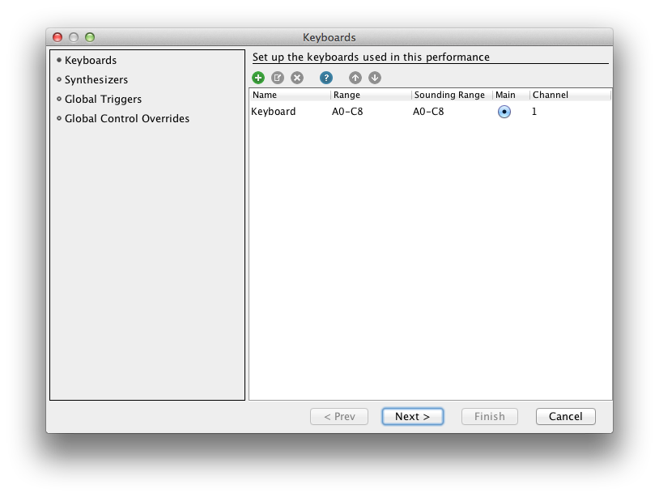
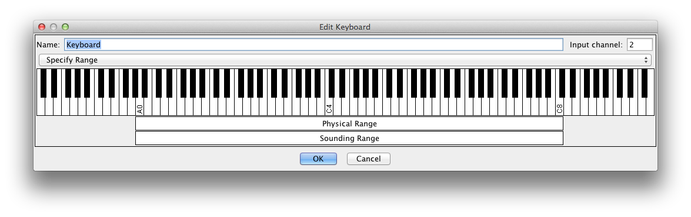
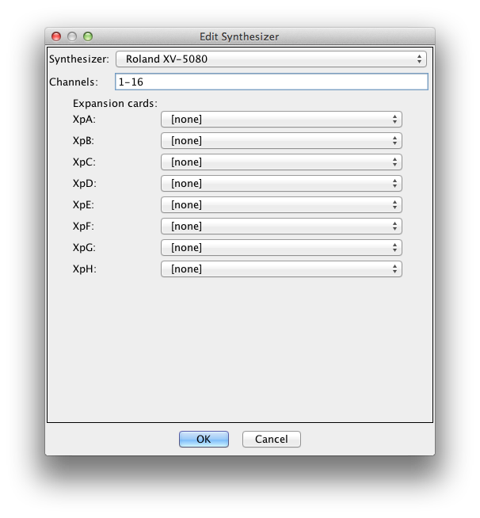
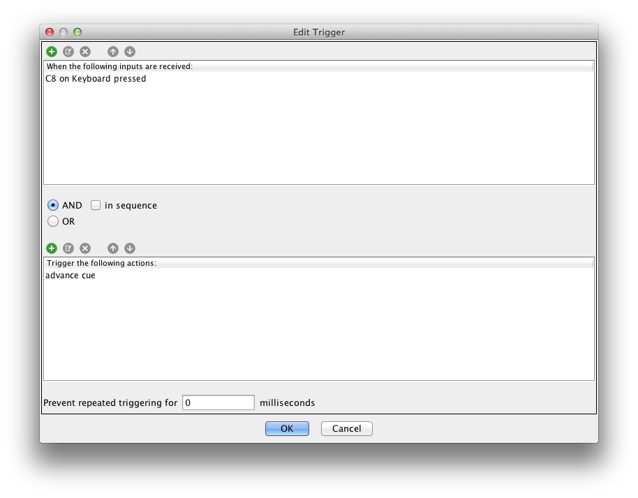
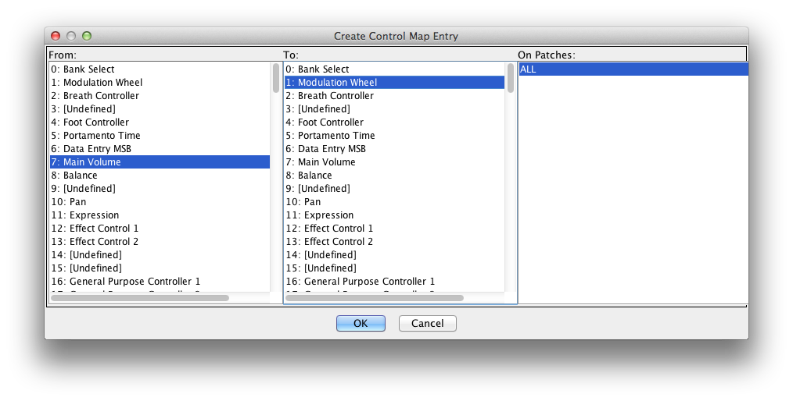
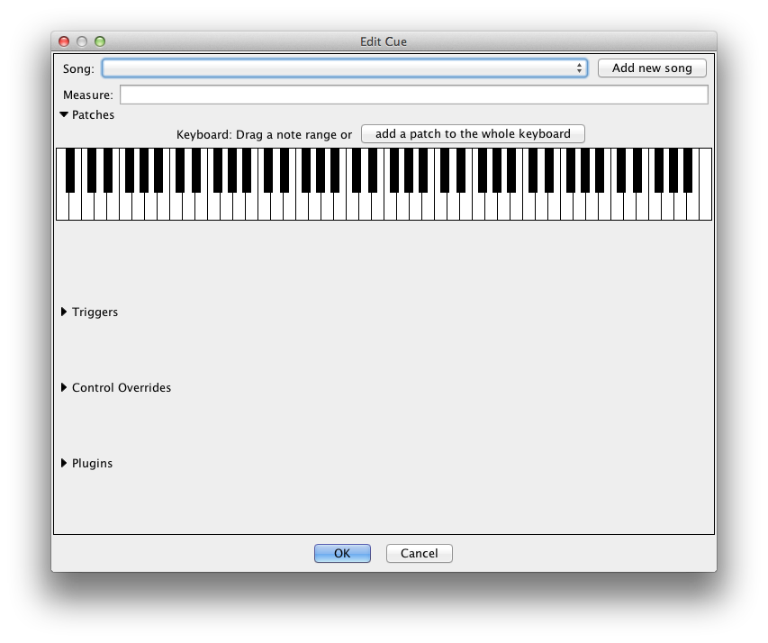
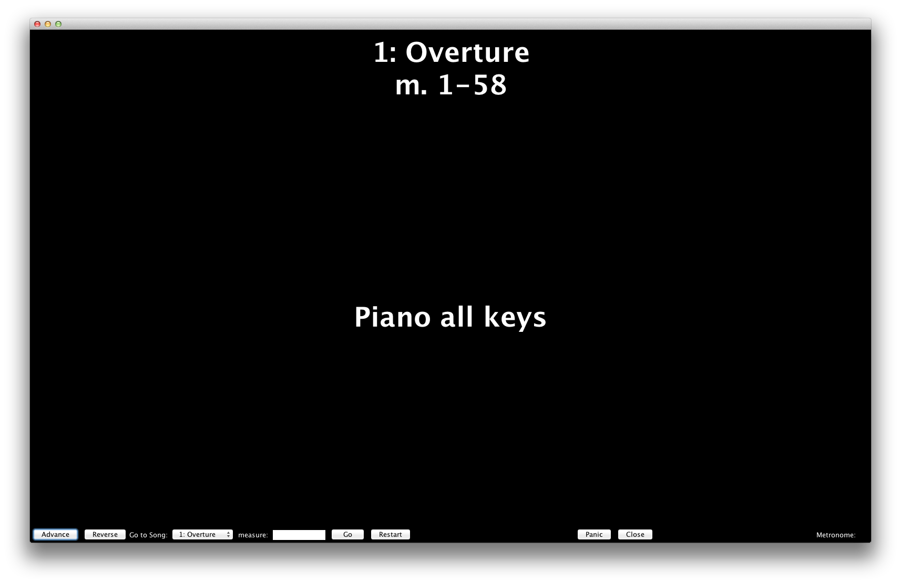

After downloading, unzip and you should find a folder called "Cadenza" containing the Cadenza.jar application, as well as a resources folder and a few others. You can leave the application on your desktop, put it in your applications folder (Program Files for Windows, Applications for MacOSX), or wherever—Cadenza is self-contained and doesn't rely on anything else on your computer. The only thing is that Cadenza.jar must be in the same location as the resources folder.
Run Cadenza.jar and click New File... to start the New File wizard. The wizard sets up the keyboards and synths to be used, and any global triggers and control overrides. These can always be changed later if your setup changes.
A predefined 88-key keyboard (simply named "Keyboard") is already defined. Add a second keyboard by clicking the "+" icon, or edit any keyboard by double-clicking or selecting it and clicking the edit icon. One keyboard is designated the Main keyboard. This is merely a convenience—the main keyboard is selected by default in all dialogs where a keyboard is to be selected.
In the Keyboard Edit dialog, you can specify the Physical Range and Sounding Range of the keyboard. The physical range should be set to the actual range of the keyboard, while the sounding range can be used to set aside notes at the extreme ends for use in triggers. Notes played outside the sounding range won't ever play a sound.
Once you're done setting up keyboards, advance to the synthesizer page. Here you define the synthesizers to be used and which output channels they will be using.
If your synthesizer is not present, it will need to be added. Contact support for assistance, or take a look in resources/delegates and resources/synthconfigs to see how the existing ones work.
Next up are global triggers:
Here you can define the trigger you want to advance to the next cue, or anything of that sort. The top panel defines the predicates, the middle determines how the predicates are processed, and the bottom defines the actions to take, which are always done sequentially. The image shows the definition of a common way to set up an advance trigger—setting aside the top key for the task. If you want to do this, it would be wise to exclude this note from the sounding range. You could also add a reverse ("go back") trigger to the bottom key similarly.
At the bottom is a tool to guard against accidentally activating a trigger twice in rapid succession from a twitch—simply set a number of milliseconds, and further triggering is blocked for that length of time.
The last page is the global control overrides:
This is useful if you have a limited number of physical controls on your keyboard. In this screenshot, the volume control is mapped globally to the mod wheel, which would be useful if you had a volume slider but no mod wheel and needed mod control.
After finishing with the setup wizard, you're brought to the main editing window. To the left is the section to edit cues, and to the right is the section to edit patches. You can start adding patches now, or define them on the fly as you create cues. Click the "+" icon above the cue section to create your first cue:
Cues contain a set of patches applied to regions of keyboards, as well as per-cue triggers, control mappings, and effects. As the label says, drag a range of notes on a keyboard to add a patch to that region, or click the button above the keyboard to add a patch to the whole keyboard. You don't have any patches defined yet, so you'll have to add one. The dialog should be self-explanatory, it lists all of the patches available on your synthesizers with a name filter. Enter an alternate name if the default name is silly (for example, you might want to rename Roland's "128voicePno" to "Piano")
Below that, you can add triggers, control overrides, and effects for just the given cue. Effects are modeled after typical audio production effects, but operate on the MIDI signals. Compressors are useful if you're using light keys that make it easy to accidentally slam them, and equalizers are useful if a particular patch has a weird spectrum.
These three sections can also disable the globals for the current cue. This may be useful if you want to use the top key as the advance button most of the time, but actually need that note just in one place.
Each cue also has a Song and Measure, which must be unique. Song and measure numbers can be numbers, letters, or combinations with the number first (e.g., "2A"). A letter without a number has an implicit "0" before it, and numbers come first. That is, A → B → 1 → 1A → 2, etc.
Back on the main window, there's also a "clone" button for easily creating identical or very similar cues in different parts of your performance. It creates a new cue that is pre-populated with the contents of the selected cue.
You can define patches outside of a cue, or edit existing patches in the patch edit section to the right. Click on the "+" icon to create a patch from scratch, or the select icon to the right to pick from a list like in the Cue Edit dialog. You can also replace all instances of a selected patch with another patch with the rightmost button.
If you swap out synthesizers, you will be prompted to replace all of the patches for which an exact match wasn't found (which is probably all of them). The dialog attempts to make suggestions based on a really broken algorithm, but I think it's funny so it's staying like that for now :)
You will also need to select the MIDI interface(s) being used. This is done in the menu: Setup | Input and Setup | Output. There is unfortunately a bug in the Java MIDI implementation for Mac OS X that prevents the system from refreshing the list of available MIDI devices after that list has been retrieved once, so if you didn't have your interface plugged in when you started Cadenza, you'll need to save, quit, plug it in, and launch Cadenza again. Sorry :(
With a patch selected on the right, all keyboards will play that patch for all notes in the sounding range (Preview mode). With a cue selected on the left, the performance will proceed as defined (Perform mode), with all keyboard assignments, triggers, etc.
For a true performance scenario, use the Control Window (Control | Show Control Window):
The Control Window is blacked out to reduce glare in orchestra pits, and provides a quick display of the current spot in the show and the current patch assignments. There are controls at the bottom left to advance, reverse, go to any cue, or go to the beginning of the show. The "Panic" button silences all sound, useful if a note gets stuck on. The "Close" button closes the window. In the bottom right is a quick view of the Metronome.